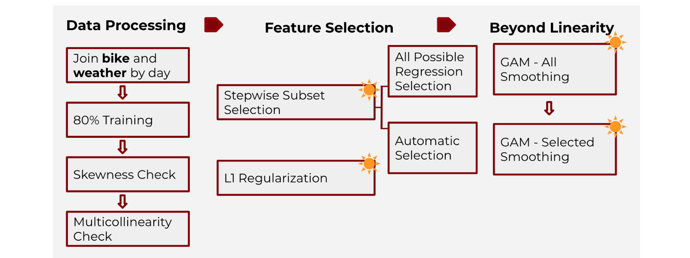
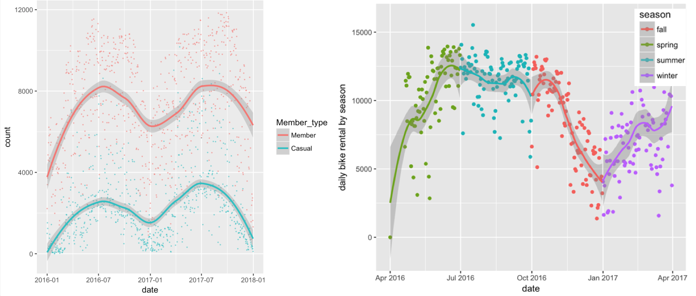
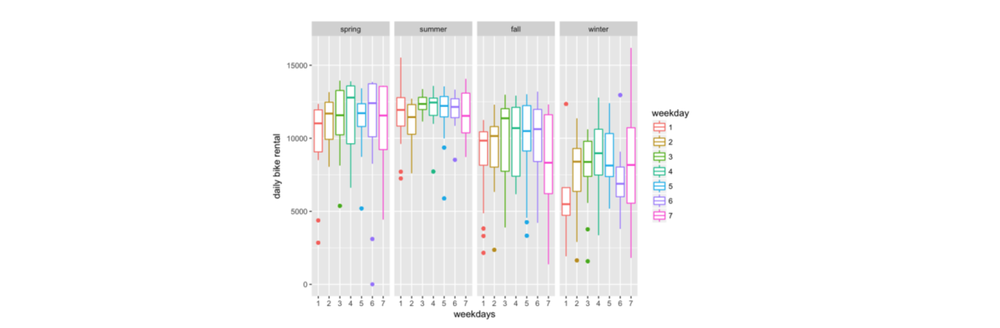
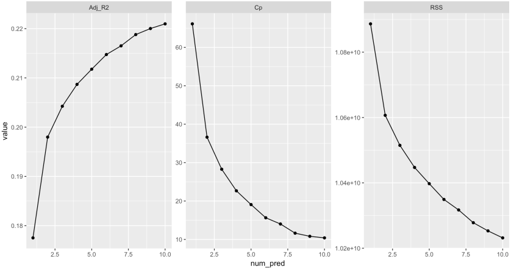
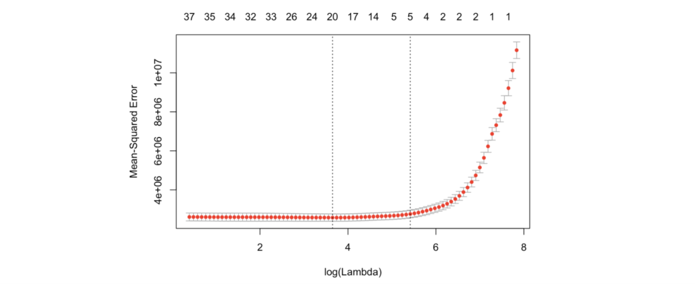
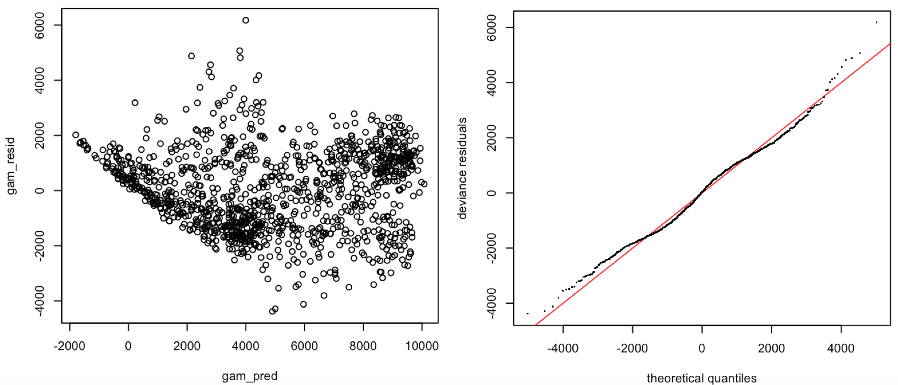
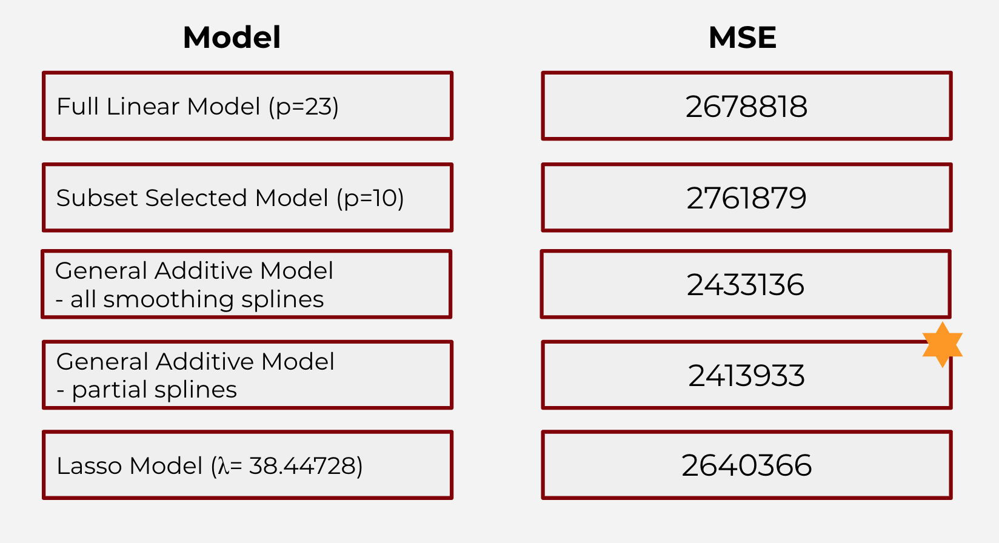
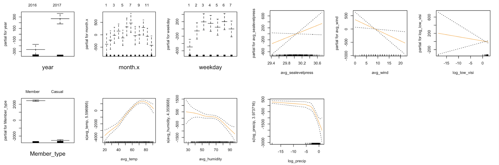

1. Introduction
Bike sharing systems are new generation of traditional bike rentals where whole process from membership, rental and return back has become automatic. In the U.S., there are at least 119 bikeshare systems covering all but two of the 20 largest urban areas, while the largest networks by far are in New York, Chicago, and Washington.
With the increasing popularity of bikeshare systems that change citizens’ lifestyles, the understanding of bikeshare systems is a key for city planners and tech startups. The bikeshare system’s social importance lies in a new perspective on monitoring traffic, environmental and health issues, that turns bike sharing system into a virtual sensor network that can be used for sensing mobility in a city. Many private companies in the industry are working on this problem and some also publish their bike use summary datasets for public analysis.
The key question for our project is determining the dominant drivers for daily bikeshare counts. The input for our algorithm is a list of time, weather and user information that might potentially drives aggregated consumer bike uses. I then use a number of machine learning algorithms (stepwise subset feature selection, shrinkage and regularization method, linear and non-linear regression) to construct a few candidate models. Then I compare their performances and select a “best” one that gives a relatively wholistic idea about the key drivers for the daily counts.
2. Data and Features
I used Capital Bikeshare Customer Use data from Capital Bikeshare. Capital Bikeshare is a bicycle sharing company that mainly serves in the Washington, D.C. area in the United States. Users can choose to use the service on a one-time basis, or they could register for an 12-month or 30-day membership and receive a key that allows them to unlock any Capital Bikeshare bike at any Capital Bikeshare station. The system data provided by Capital Bikeshare includes trip history data, an exhaustive collection of bikeshare trip summary dating to 2010.
I explored the Capital Bikeshare User Data from January 2016 to December 2017, mainly focusing on trip history summary user information with variables include year, month, weekday, and member type (registered member or casual user). I also created a daily rides count variable from the original dataset by counting total number of entries by different type of users per day.
To facilitate the analysis about user trends, I also obtained weather data in the Washington, D.C. area from Weather Underground to match our bikeshare trip data by date. I hope to explore the influence of weather variables on bikeshare rides counts, such as temperature, precipitation, and wind speed.
Some examples of our variables are listed in table 1.
3. Methods and Results
 Figure 1. brief illustration of the methods and procedure
3.1. Data Processing
I looked at the distribution of each features and log transformed skewed variables. More specifically, I want to stabilize the variance and meet the assumptions of a statistical test or procedure, such as t-test, ANOVA, regression, etc.
I also checked the correction between the explanatory variables, and removed highly correlated ones (temperature and dew point) to avoid multicollinearity. We created a subset of variables that pass through the multicollinearity check.
Selected Results from Exploratory Data Analysis
 Figure 2. EDA graphs from season and member type analysisRegarding member type, riders on average use the service longer than registered members. Bike share ride duration peaks during summer for both kinds users; in general, there were more rides in spring and summer.
 Figure 3. EDA graph from weekday analysisIn different seasons, the bike share count varies a lot on different weekdays. This is the area that requires deeper analysis.
3.2 Feature Selection
1) Stepwise Subset Selection
Stepwise subset selection (forward, backward and exhaustive methods) proposes an efficient approach to select best subsets of the independent variables in the model. Forward selection starts from an empty set of features and adds features to the model through cross validation. Backward selection works all the the way around by starting from a full set; the exhaustive one incorporates the two approaches before.
I used two algorithms - automatic selection and all possible regression selection - to perform the stepwise selections.
First, I conducted the automatic selection where the R function step() performs the selection on this own and gives out the best subset of features. Forward selection gives out a model with 10 predictors, while backward and exhaustive suggest one with 7. I calculated the MSE for the two models and found that the one with 10 predictor variables has a lower error.
 Figure 4. The performance of models with different numbers of variables from forward subset selectionThen, for all possible regression selection, I compared the models with different numbers of predictors according criteria such as AiC and adjusted R^2. According to Fig.1, the forward selection proposes that the best model constitutes 10 variables. The backward and exhaustive selection methods produce the same result with similar plots.
As a result, through stepwise subset selection, the optimal subset of features contains 10 variables, which included member type, month,weekday, average temperature, average humidity, etc.
2) Shrinkage Method
L1 Regularization (Lasso) is a shrinkage method that regularizes the coefficient by shrinking them toward 0. It has the potential to improve the fit because reducing the estimates help reducing the variance and solves the overfitting problem. The algorithm is designed to minimize the expression (with a shrinkage penalty term) below:
This method can be used for feature selection because shrinking some coefficients to 0 is essentially eliminating the variables in the model.
I passed the full model (with 23 potential variables) to L1 Regularization and used cross validation to choose the best shrinking parameter λ = 38.44728. By passing the best λ into the expression, the L1 regularization methods suggests a model with 12 variables. (See Figure.5)
 Fig.5 . Cross-validation for optimal λ for Lasso3.3 Regression
1) Linear Model
I passed in the variables selected by feature selection methods to a standard multiple linear regression to achieve the best coefficient estimates for regression. From the regression summary, we can see that member type and average temperature has the lowest p-value, so they are the most important features in the model. More specifically, keeping everything else equal, the rides count is 4992 units higher registered member users on average per day than casual users; the rides count increases 88.5 units when average temperature is one unit higher in degrees Fahrenheit.
The adjusted R^2 value is 0.7767 for this standard multiple linear regression: about 77.67% of the total variation in the bikeshare rides count can be explained by this model.
2) Lasso Model
I fitted a lasso model on all of the variables of interest. The optimal value of λ (38.44728) for L1-regularization was tuned using 10-fold cross-validation over a grid of log values (Figure 2). Lasso regression gave an output of 11 different features with nonzero coefficient estimates. The features chosen by the Lasso are different to the ones produced by feature selection process: both average temperature and the lowest temperature, and both high wind speed and average wind speed are selected. However, the residuals are not randomly scattered.
3) Generalized additive model - all smoothing splines
I fitted a generalized additive model with smoothing spline for all of the variables selected by feature selection above. For degrees of freedom selection, I used cross-validated mean squared errors.
From the Anova for Parametric Effects in the summary, month, member type, average temperature, and average humidity have the lowest p-values. The p-values are generally smaller than that from the standard multiple linear regression. We can also see that in the Anova for Nonparametric Effects, average sea level press, average wind speed, and low visibility are not statistically significant at significance level of 0.1, there is no strong evidence of non-linear relationship between these predictors and bikeshare count. We would want to create a mixed model with these factors in linear terms.
4) Generalized additive model - partial smoothing splines
I fitted a mixed generalized additive model with the average sea level press, average wind speed, and low visibility in linear terms and all the rest selected variables in smoothing spline. The degrees of freedom are the same as in all smoothing splines generalized additive model.
The AIC criteria improves for the partial smoothing model to 20378.31.The residual plot and the QQ-plot are similar to those for all smoothing splines generalized additive model. The residuals are not randomly scattered in the residual plot, and the homoscedasticity assumption is not met: there exists a non-linear pattern.
 Figure 6. Diagnostics of the GAM model4. Model Selection and Validation Result
I used the validation set cross validation method to further compare the performances of the models and select from the four candidates. The “best” model ideally has the lowest test error associated with fitting the model on the observations among the four. The validation set method divides the available dataset randomly into two parts - 80% of the data was used as training set and the rest 20% as test, or validation, set. (To note, I divided the sets in the very beginning and only used the training set for all the steps before.)
The model was tested on the validation set through making predictions, and then the mean squared error is calculated and listed in Table 2 (the original full linear model if I use all possible variables are included as a reference).
 Table 2. Test Errors for the Candidate ModelBased on the MSE on validation set, I observe that the model with the lowest error is the General Additive Model with partial smoothing splines for continuous variables.
6. Conclusion
Through feature and model selection algorithms, I identified the general additive model that explain the effects of with influential features. Scrutinizing at the features and the smoothed patterns, I observe that:
 Figure 7. graphical illustration of the effects of different variables in the GAM model with partial splines1) year: there is a significant increase in bikeshare ride counts from 2016 to 2017;
2) month: within a year, the count increases from January to July and slowly gets lower when going into winter months;
3) weekday: within a week, the count is the lowest on mondays, and stays almost the same throughout other weekdays;
4) member type: registered members contribute the majority of bikeshare use, significantly more than casual users;
5) average temperature: bikeshare ride count increases as the average temperature increases, but starts to decline as the temperature goes too high;
6) average humidity: the count tends to decrease as average humidity increases;
7) average sea level pressure: count and average sea level pressure has a positive linear relationship, but has a lot variation at the lower-end and upper-end of the distribution;
8) average wind speed: count and average wind speed has a negative linear relationship, but the variation is large at the lower-end and upper-end of the distribution;
9) lowest visibility: count and lowest visibility has a negative linear relationship, but the variation is large at the lower-end of the distribution;
10) precipitation: bikeshare rides count stays flat as precipitation increases, and starts to decrease steeply as the rain gets too heavy.
This allows me to more accurately capture how the influential factors determine the total daily bikeshare counts. Furthermore, I can potentially extend the application of this project to a possible cyclical marketing campaign that targets on the possible low-count (unpopular) days to potentially drive more profits.
For the next step, I have proposed three routes that we can continue work on:
First, I can potentially expand our dataset more from retrieving all the observations from 2011 to 2017. By doing so, we could 1) confirm if there was an increasing trend in year variable so that the bikeshare system is getting more popular in this past year, 2) conduct time-series analysis on the comprehensive panel data.
In addition, I could add in more potentially influential variables (features) for selection. Currently I only focus in the bike metadata and weather variables. For example, we could explore the potential for a categorical variable called “popular station” indicating whether the bike starts or ends at the popular stations (eg, Columbus Circle / Union Station, Lincoln Memorial) in Washington DC.
Also, I could potentially run a classification, a place of a regression model. Instead of using total daily counts, we could identify the popularity of the bikeshare in a specific day. For example, the day is popular if total daily bikeshare rides exceeds 5000 count.
I also want to point out the limitations in our analysis. Instead of only passing in the log-transformed variables to the generalized additive model, I could have asked the smoothing model to take care of the skewed predictors. In future study, I would like to see if doing so would improve model performance on testing data.
Special Thanks to - Ziyi Lu